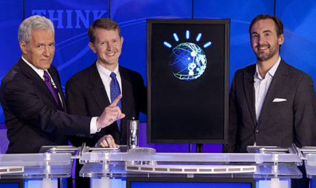

IBM Watson is a computer system capable of answering questions posed in natural language.
It was developed as a part of IBM's DeepQA project by a research team, led by principal investigator David Ferrucci.
Watson was named after IBM's founder and first CEO, industrialist Thomas J. Watson.
The computer system was initially developed to answer questions on the popular quiz show Jeopardy! and in 2011, the Watson computer system competed on Jeopardy! against champions Brad Rutter and Ken Jennings, winning the first-place prize of US $1 million.